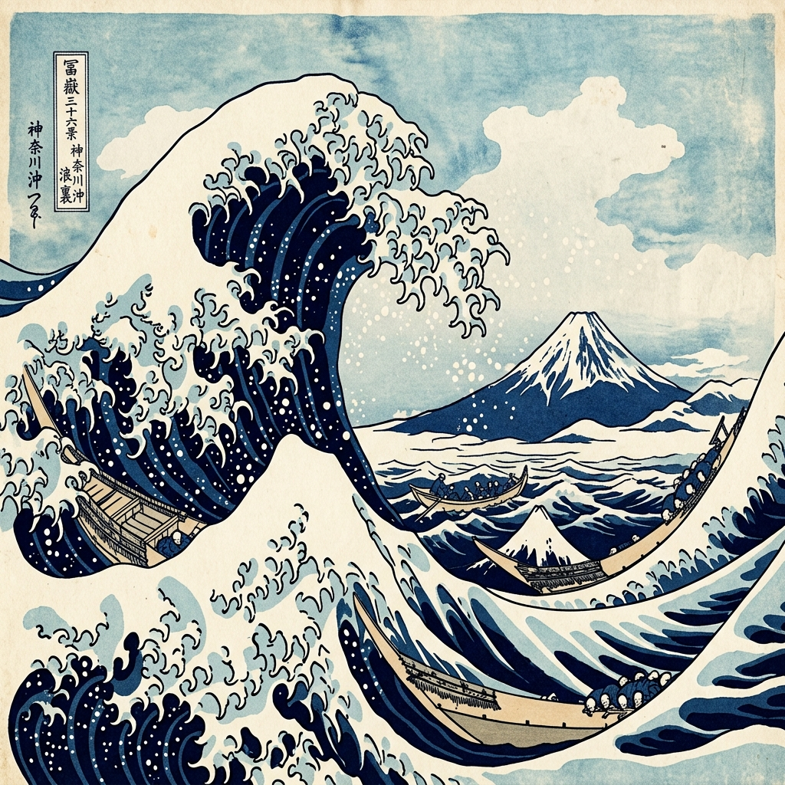
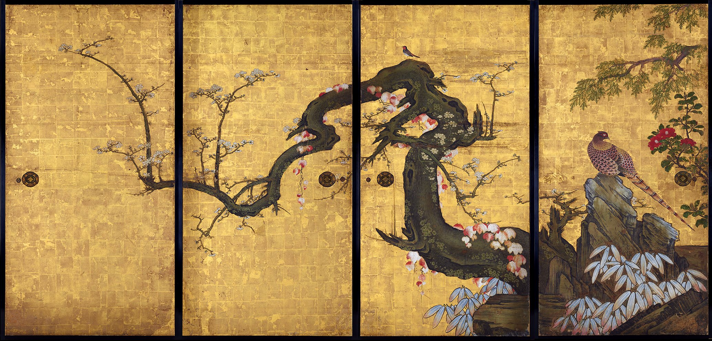
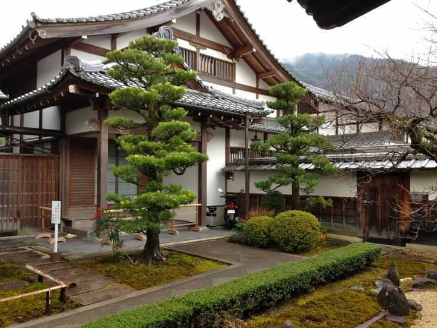
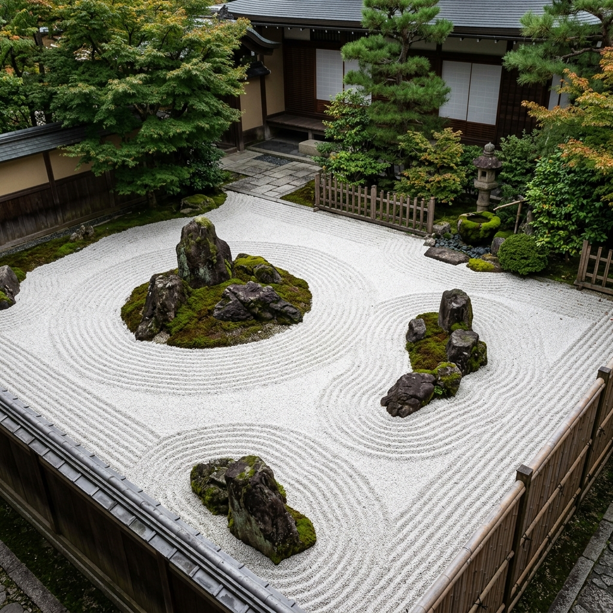

pulau utama
Honshu, Hokkaido, Kyushu, dan Shikoku—empat bentang alam utama yang menjadi jantung dan rumah bagi peradaban Jepang.
Selami jiwa Jepang lewat untaian sejarah, keheningan ruang tradisional, dan harmoni musim yang mengalir hingga ke keseharian masa kini.

Deretan angka ini bukan sekadar statistik, melainkan pintu gerbang untuk menyelami lebih dalam keunikan peradaban Jepang.
Honshu, Hokkaido, Kyushu, dan Shikoku—empat bentang alam utama yang menjadi jantung dan rumah bagi peradaban Jepang.
Setiap sudut prefektur menyimpan keunikan rasa, kemeriahan festival, dan warna dialek tersendiri, membuktikan bahwa Jepang tak pernah seragam.
Dari ketenangan Hokkaido di utara hingga kehangatan Okinawa di selatan, pembagian wilayah ini melahirkan karakter budaya yang kaya.
Untaian sejarah yang membentang dari peradaban kuno Jomon hingga era modern Reiwa, terus tumbuh tanpa kehilangan jati dirinya.
Mulai dari alur waktu sejarah, galeri visual yang hidup, eksplorasi ruang interaktif, hingga kuis asah otak yang menyenangkan.

Telusuri perjalanan peradaban Jepang lewat linimasa interaktif. Mulai dari masa berburu-pengumpul Jomon, masa keemasan aristokrat Heian, kejayaan militer keshogunan Kamakura dan Edo, hingga restrukturisasi era modern.
Telusuri Sejarah
Jelajahi enam pilar kesenian Jepang seperti Ukiyo-e, Kintsugi, teater tradisional Kabuki & Noh, serta puisi Haiku. Nikmati juga getaran dawai Koto, Shamisen, dan tiupan seruling Shakuhachi secara interaktif.
Masuk ke Galeri
Mulai dari keanggunan jubah Kimono formal, kenyamanan Yukata festival musim panas, hingga pakaian kerja Samue. Sempurnakan eksplorasi dengan mencicipi kesegaran Sushi, kuah gurih Ramen, hingga garingnya Tempura.
Jelajahi Busana & Rasa
Pahami struktur Shiro (Kastel), gerbang Torii Jinja (Kuil Shinto), kelenturan Pagoda kayu kuil Buddha, keheningan ruang tikar Tatami dan pintu shoji Minka, hingga filosofi minimalis bangunan modern.
Mulai Eksplorasi Ruang
Tantang wawasanmu tentang Jepang melalui kuis pilihan ganda interaktif. Jawab 5 pertanyaan acak seputar kesenian Shodo dan Ukiyo-e, pakaian adat, makanan tradisional, tata ruang rumah, hingga era kaisar dan shogun.
Mulai KuisSetiap sudutnya merangkum perpaduan magis antara keindahan alam, spiritualitas kuno, dan kejeniusan arsitektur warisan masa lalu.

Ditetapkan sebagai Warisan Dunia UNESCO, kastil pra-modern tercantik di Jepang ini dikagumi karena labirin pertahanan yang kokoh dan keanggunan siluet putihnya yang menyerupai burung bangau lepas landas.
Anda dapat memulai dari lembaran sejarah untuk membangun pemahaman yang utuh, atau langsung menyelami keindahan seni, cita rasa kuliner, keunikan tata ruang, serta menguji wawasan lewat kuis interaktif kami.